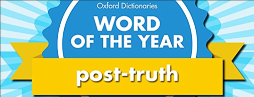
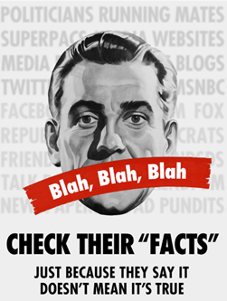
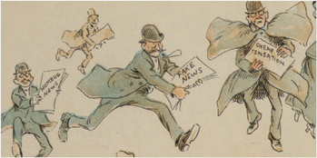

Za udeležence
Za izvajalce
Trainees Edition
Trainers Edition
MODUL 1: POST-RESNICE in LAŽNE NOVICE
Opis modula
Glavni namen tega modula je pojasniti pojma post-resnica in lažne novice ter kako ogrožata demokracije ter blaginjo družb in posameznikov.
Sekundarni namen je usmerjati izvajalce usposabljanja, ki želijo vsebino tega modula uporabiti pri usposabljanju svojih udeležencev.
S temi cilji je predstavljen vpliv obdobja post-resnice na sprejemanje informacij pri posameznikih skupaj s smernicami, kako poučevati to temo.
Udeleženci, ki bodo uspešno zaključili ta modul, bodo:
- razumeli, zakaj lažne novice ogrožajo demokracije ter blaginjo družb in posameznikov
- razumeli pojem post-resnice
- znali opredeliti lažne novice
- razumeli, kako hitro se lažne novice širijo
- razumeli povezavo med lažnimi novicami in pojmom post-resnica
- razumeli, zakaj izraz lažne novice ni ustrezen za opis kompleksnosti informacijskega onesnaževanja
Poleg tega bodo bodoči izvajalci izobraževanj, ki bodo uspešno zaključili ta modul, lahko pokazali, da razumejo, kako poučevati pojma post-resnica in lažne novice ter grožnjo, ki jo predstavljata za demokracijo ter blaginjo ljudi in družb.
Struktura modula
Ta modul je sestavljen iz naslednjih delov:
- Opis modula (cilji, opis vsebine in učni rezultati)
- Struktura modula
- Smernice za udeležence usposabljanja
- Smernice za izvajalce usposabljanja (kako se pripraviti, metode dela in nasveti za izvajalce usposabljanja)
- Vsebina (gradivo in vaje)
- Kviz
- Viri (reference in priporočeni viri ter videoposnetki)
Glavni cilji modula, opis vsebine in učni rezultati so pojasnjeni v delu Opis modula. Smernice za udeležence usposabljanja vključujejo navodila in predloge za udeležence izobraževanja. Smernice za izvajalce usposabljanja vodijo izvajalce usposabljanja skozi različne faze usposabljanja in vsebujejo nasvete, ki bi lahko bili koristni pri poučevanju predmeta. Vsebina vključuje vsa študijska gradiva in vaje, povezane z vsebino. Kviz vključuje vprašanja z več možnostmi izbire in/ali ja/ne vprašanja, s katerimi lahko udeleženci usposabljanja preverijo svoj napredek. Viri vsebujejo dve komponenti: reference in priporočene vire za nadaljnje branje in študij. Reference so seznam virov, navedenih v vsebinskem delu. Priporočeni viri so sestavljeni iz seznama dodatnih virov in videoposnetkov, ki jih priporočamo za branje in gledanje, da bi se naučili več o temi.
Smernice za udeležence usposabljanja
Od udeležencev izobraževanja se pričakuje, da bodo prebrali besedilo, si ogledali priporočene videoposnetke in rešili vaje. Za dodatne informacije lahko poiščejo predlagane vire. Po končanem študiju vsebine udeležencem priporočamo, da opravijo kviz za oceno svojega napredka. Po potrebi lahko ponovno pregledajo študijsko gradivo.
Smernice za izvajalce usposabljanja
Smernice za izobraževalce vključujejo predloge in nasvete o tem, kako predstaviti vsebino tega modula za izobraževanje odraslih.
Priprava
Priprava predstavitve (PowerPoint/Prezi/Canva), obogatene z vizualnim gradivom (slike in videoposnetki) in dejstvi, ki temeljijo na raziskavah.
Kako začeti
Na začetku lahko uporabite kratek kviz (3 do 5 vprašanj) v programu Kahoot ali vprašanja z Mentimetrom, da udeležence pritegnete k temi. Uporablja se lahko kot motivacijsko orodje in tudi kot orodje za preverjanje obstoječega znanja udeležencev o temi. Nekateri primeri vprašanj so lahko naslednji: Kaj pomeni post-resnica? Kaj so lažne novice?
Učne metode
Med usposabljanjem se lahko kombinirajo različne učne metode. Na primer:
- predavanje
- diskusija
- delo v skupinah
- samorefleksija
Nasveti za izobraževalca
Aktivnosti za ogrevanje
Učinkovit način vključevanja udeležencev in določanja skupnih pričakovanj o tem, kaj se bodo naučili, je postaviti nekaj predhodnih vprašanj o temi. To lahko storite s skupinskim delom, tako da udeležence usposabljanja pozovete k razpravi in zbiranju idej, lahko pa tudi individualno, tako da vsakega udeleženca prosite, naj svoje ideje zapiše na samolepilne lističe.
Dejavnost se lahko izvede na naslednji način:
- Vprašajte udeležence, ali so že kdaj naleteli na izraza pos-tresnica in lažne novice.
- Udeležence povabite, da podrobneje pojasnijo povezavo teh dveh pojmov.
- Vprašajte jih o možnem vplivu lažnih novic na demokracijo.
Predstavitev učnih ciljev
Jasno je treba opredeliti cilje (pojasniti pojma post-resnica in lažne novice, njuno povezavo ter vpliv na demokracijo, posameznike in družbe). Po ogrevalnih vprašanjih bo lažje pojasniti cilje.
Predstavitev učnih vsebin
Med predstavljanjem vsebine poskrbite za interakcijo z udeleženci in jih spodbujajte k aktivnemu sodelovanju.
- Preden podate opredelitev pojmov post-resnica in lažne novice, prosite udeležence, da pripravijo svojo.
- Ko predstavljate grožnje post-resničnih in lažnih novic, udeležence prosite, da jih najprej podrobneje predstavijo.
- Ko predstavljate povezavo med post-resnico in lažnimi novicami, jih prosite, naj jo najprej podrobneje predstavijo.
- Pri razkrivanju hitrosti širjenja lažnih novic navedite ugotovitve raziskave.
- Udeležence vprašajte za mnenje o tem, zakaj se lažne novice širijo hitreje kot resnica.
Zaključek
Naredite kratek povzetek učne ure in postavite nekaj vprašanj, ki bodo pomagala razbrati najpomembnejša sporočila, ki jih želite posredovati.
Pri tem vam lahko pomaga naslednje vprašanje:
- Vprašajte udeležence usposabljanja o grožnjah post-resničnostne politike, uživanja informacij na podlagi čustev in lažnih novic.
Ob zaključku se prepričajte, da udeleženci usposabljanja razumejo, da imajo v dobi post-resnice objektivna dejstva manjši vpliv na oblikovanje javnega mnenja kot čustva in osebna prepričanja, potrošnjo informacij pa vodijo predvsem čustva ljudi, lažne novice se širijo hitreje in dosežejo več ljudi kot resnica, izraz lažne novice pa je neustrezen za opis kompleksnosti informacijskega onesnaževanja.
Vsebina: Post-resnica in lažne novice
Uvod
Delujoča demokracija temelji na izobraženih in dobro obveščenih državljanih. Vendar so danes ljudje preplavljeni z lažnimi informacijami (Canales, 2020). Procesi, s katerimi ljudje pridobivajo informacije ter oblikujejo svoja mnenja in prepričanja, so zato ključnega pomena (Lewandowsky, Ecker, Seifers, Schwarz in Cook, 2012, str. 107). Mediji in internet zagotavljajo velike količine informacij, pri čemer je na posamezniku, da loči resnične od neresničnih. Vendar je po eni strani deljenje lažnih informacij, zavestno ali ne, v porastu (Canales, 2020), po drugi strani pa imajo posamezniki omejen čas, kognitivne vire ali motivacijo za razumevanje kompleksnih tem. Posledično so napačne predstave pogoste. Poleg tega je netočna prepričanja, ko se enkrat oblikujejo, izjemno težko izkoreniniti (Ecker, Lewandowsky, Swire in D. Chang, 2011, str. 570). Posledice so lahko resne. Če večina verjame v nekaj, kar je dejansko napačno, so lahko napačne/nepravilne informacije podlaga za politične in družbene odločitve (na tako različnih področjih, kot so izobraževanje, zdravje in gospodarstvo), ki so v nasprotju z najboljšimi interesi družbe; če so posamezniki napačno obveščeni, lahko prav tako sprejmejo odločitve zase in za svoje družine, ki niso v njihovem interesu (Lewandowsky, Ecker, Seifers, Schwarz in Cook, 2012, str. 107).
Tako napačno/nepravilno informiranje velja za resno grožnjo demokracijam (Filloux, 2017) ter blaginji družb in posameznikov. Za boj proti napačnim/izkrivljenim informacijam je nujno razumeti, zakaj sploh nastajajo, kako se širijo in tudi strukturne razloge za njihovo učinkovitost (Wardle & Derakhshan, 2017, str. 14).
Da bi preprečili, da bi se ljudje pustili preslepiti z lažmi, je najbolj potrebno, da jih usposobimo za razvijanje kritičnega mišljenja in veščin novičarske pismenosti.
Post-resnica
Pravijo, da živimo v obdobju po resnici. Post-resnica je izraz, "ki se nanaša na okoliščine ali označuje okoliščine, v katerih imajo objektivna dejstva manjši vpliv na oblikovanje javnega mnenja kot pozivi k čustvom in osebnemu prepričanju" (Post-truth, 2021). Predpona "post" se tu nanaša na nepomembnost pojma "resnica".
V dobi post-resnice potrošnjo informacij usmerjajo predvsem čustva ljudi. V tej dobi ljudje "vse bolj verjamejo informacijam, ki nagovarjajo njihova čustva in osebna prepričanja, v nasprotju z iskanjem in sprejemanjem informacij, ki veljajo za dejanske in objektivne" (Cooke, 2018).
"Post-resnica" je bila leta 2016 razglašena za besedo leta po izboru Oxford Dictionaries. Uredniki slovarja so opazili velik porast uporabe tega izraza v letu 2016 v primerjavi s prejšnjim letom. Razlog za nenaden porast uporabe je bila predvsem politika. V veliki meri je bila posledica velikega števila lažnih novic, nastalih med referendumom o Brexitu v Združenem kraljestvu in predsedniškimi volilnimi kampanjami v Združenih državah Amerike (Flood, 2016). Izraz je postal priljubljen v obliki post-resničnostne politike in se je od takrat začel pogosteje pojavljati v novicah.

"2016 Word of the Year: Post-Truth" avtorja Mike Licht, NotionsCapital.com je licenciran pod CC avtorja 2.0
Vloga čustev pri oblikovanju množičnega političnega vedenja je dobro raziskana v politični psihologiji (Jones, Hoffman in Young, 2012, str. 1132). Ugotovitve teh raziskav so dokazale, da so čustva močni napovedovalci preferenc glede političnih vprašanj in kandidatov (Brader, 2005, str. 389). Večina volilnih modelov temelji na tem, kaj si volivci zapomnijo, pri čemer je priklic spomina zelo pristranski. Volivci si pogosteje zapomnijo informacije, ki sprožijo afektivni odziv (Civettini in Redlawsk, 2009, str. 125). Politiki se tega dobro zavedajo in vse bolj apelirajo na čustva državljanov namesto na razum. Kritiki obsojajo, da je to manipulativno in tudi strupeno za demokratično odločanje (Brader, 2005, str. 388).

"Blah, Blah, Blah" avtorja outtacontext je licenciran pod CC avtorja-NC-ND 2.0
Post-resničnostna politika je uspevala v polariziranem okolju, kjer je "ideja resnice že razdeljena na pojma moja in tvoja resnica." Lažne novice dodatno zaostrujejo polarizacijo, povzročajo korupcijo in škodujejo "tkivu demokracije" (Al-Rodhan, 2017). Z drugimi besedami, lažne novice krepijo obstoječe politične in družbene polarizacije. "Skupinska polarizacija je pomemben pojav v socialni psihologiji in jo je mogoče opazovati v številnih družbenih kontekstih" (npr. feminizem, cepljenje, nogomet, podnebne spremembe, živalske pravice, splav, politika) (Group polarization, 2020). Internet in družbeni mediji so danes predstavljali novo platformo za lažne novice in skupinsko polarizacijo.
Lažne novice
V obdobju po resnici "ljudi pri porabi informacij vedno bolj vodi afektivna ali čustvena razsežnost njihove psihe v nasprotju s kognitivno razsežnostjo. Ta post-resnična realnost je eden od razlogov, zakaj so lažne novice postale tako neizogibne in zakaj se je posledično tako težko boriti in prekiniti proizvodnjo in širjenje namerno lažnih informacij" (Cooke, 2018).
Svetovna zgodovina je polna primerov izmišljenih vsebin (laži, govoric, propagande), ki so bile uporabljene za zavajanje ljudi (Wardle, 2020). Čeprav ima izraz "lažne novice" dolgo zgodovino, je šele pred kratkim postal modna beseda. Opredeljen je "kot novinarski članki, ki so namerno in preverljivo napačni in bi lahko zavajali bralce" (Allcott & Gentzkow, 2017, str. 213).
V študiji akademskih člankov, v katerih je bil med letoma 2003 in 2017 uporabljen izraz "lažne novice", je bilo ugotovljeno, da je bil izraz uporabljen za opis številnih različnih pojavov in povezan z različnimi vrstami vsebin, od novinarske satire, parodije novic, izmišljanja do manipulacije, oglaševanja in propagande (Tandoc, Lim & Ling, 2018).

"fake-news-detail-2" avtorja The Public Domain Review je označen z CC PDM 1.0
Ne glede na to, v kakšni obliki in s kakšno oznako se pojavljajo (kot so urbani miti, potegavščine, teorije zarote, satirične novice in alternativna dejstva), je širjenje dvoumnih informacij danes zaskrbljujoče hitro. Pomen boja proti lažnim novicam je poudarjen v literaturi in tudi v Poročilu o globalnih tveganjih 2021 (The World Economic Forum, 2021), ki obravnava izzive, ki zahtevajo takojšnje skupno ukrepanje.
Čeprav izraz lažne novice sploh ni nov, je zdaj novo to, da lahko vsakdo z lahkoto ustvarja lažne in zavajajoče vsebine ter hitrost, s katero lahko te vsebine potujejo po svetu (Wardle, 2020).
Raziskava, ki so jo izvedli znanstveniki MIT, nam pomaga bolje razumeti, kako hitro se lažne novice širijo. Raziskovalci so ustvarili nabor podatkov, ki vključuje več kot 100.000 novic, objavljenih na Twitterju, in te novice razvrstili kot resnične ali neresnične na podlagi informacij, ki so na voljo na platformah za preverjanje dejstev. Raziskava diferencialnega širjenja novic v naboru podatkov je pokazala, da so lažne novice dosegle več ljudi (70 odstotkov več) in se širile hitreje (šestkrat) kot resnične. Raziskovalci so ugotovili, da so bile "lažne novice bolj izvirne kot resnične, kar kaže na to, da so ljudje bolj verjetno delili nove informacije" (Vosoughi, Roy in Aral, 2018).
Vir: Science
Druga analiza kaže, kako so spletne lažne novice o volitvah leta 2016 na Facebooku v ZDA prehitele prave novice. Ugotovljeno je bilo, da so najboljše lažne volilne novice ustvarile več (približno 15 odstotkov) skupnega sodelovanja (delitev, odzivov in komentarjev) na Facebooku kot najboljše volilne zgodbe glavnih novic (Silverman, 2016).
Lažne novice se na splošno širijo, ne da bi bile preverjene (Cooke, 2018). Čeprav so propagandisti, dobičkarji in troli odgovorni za ustvarjanje in začetno deljenje velikega dela zavajajočih informacij, ki jih najdemo na družbenih medijih, se te lažne informacije širijo zaradi dejanj splošne javnosti (Vosoughi, Roy in Aral, 2018, str. 1146). Zato je eden od načinov za zmanjšanje širjenja lažnih informacij zmanjšanje verjetnosti, da posamezniki te informacije delijo (Fazio, 2020). Najbolj zaskrbljujoče je, da tudi če se lažne informacije sčasoma ovržejo, je škoda storjena in so še naprej praktično na voljo za odkrivanje v prihodnosti (Cooke, 2018).
Kot poudarja Wardle (2019, str. 6), je informacijski ekosistem zdaj nevarno onesnažen in ljudi prej razdvaja kot povezuje. Informacijska onesnaženost onesnažuje javni diskurz ne le o političnih vprašanjih, temveč tudi o številnih drugih (tj. gospodarskih, družbenih in zdravstvenih) vprašanjih. Napačne medicinske informacije na primer že od nekdaj ogrožajo zdravje (Wardle in Derakhshan, 2017, str. 10). Tako je izraz infodemija, ki je zloženka besed "informacija" in "epidemija", ki se običajno nanaša na hitro in daljnosežno širjenje informacij (Infodemija, 2021), Svetovna zdravstvena organizacija (2020) na novo opredelila za obravnavo prevelike količine informacij (vključno z napačnimi ali zavajajočimi) med izbruhom bolezni, ki povzroča zmedo in tvegano vedenje, kar lahko škoduje zdravju. Poleg tega je študija o teorijah zarote, povezanih s podnebjem, pokazala, da lahko napačne predstave javnosti o podnebnih spremembah privedejo do manjšega sprejemanja resničnosti podnebnih sprememb in manjše podpore politikam blaženja (Cook, Lewandowsky in Ecker, 2017).
V sorodni literaturi obstaja soglasje, da je potrebna boljša alternativa, ki bi nadomestila izraz lažne novice. Ta namreč ne ustreza opisu kompleksnosti informacijskega onesnaževanja in ne zajema vseh različnih vrst zavajajočih vsebin, ki so včasih resnične, vendar preoblikovane na nov način. Zato je predlagana uporaba ustreznejših izrazov, ki pomagajo razlikovati (Wardle, 2019, str. 6; Wardle, 2020). O tem bomo razpravljali v naslednjem modulu.
Vaja
Kviz
Reference
Allcott, H. & Gentzkow, M. (2017). Social media and fake news in the 2016 election. Journal of Economic Perspectives, 31(2), 211–236. doi:10.1257/jep.31.2.211.
Al-Rodhan, N. (2017). Post-truth politics, the fifth estate and the securitization of fake news. Global Policy.
Brader, T. (2005). Striking a Responsive Chord: How Political Ads Motivate and Persuade Voters by Appealing to Emotions. American Journal of Political Science, 49(2), 388-405. doi:10.2307/3647684
Canales, S. B. (2020). The Australian Libraries and Information Association and National Archives Band Together Against Disinformation. The Canberra Times.
Civettini, A., & Redlawsk, D. (2009). Voters, Emotions, and Memory. Political Psychology, 30(1), 125-151.
Cook, J., Lewandowsky, S. & Ecker, U.K.H. (2017). Neutralizing misinformation through inoculation: Exposing misleading argumentation techniques reduces their influence. PLOS ONE 12(5): e0175799.
Cooke, N. (2018). Fake news and alternative facts: Information literacy in a post-truth era. ALA.
Ecker, U., Lewandowsky, S., Swire, B., & Chang, D. (2011). Correcting false information in memory: Manipulating the strength of misinformation encoding and its retraction. Psychonomic Bulletin & Review, 18, 570–578.
Fazio, L. (2020). Pausing to consider why a headline is true or false can help reduce the sharing of false news. Harvard Kennedy School Misinformation Review. 10.37016/mr-2020-009.
Filloux, F. (2017). You can’t sell news for what it costs to make. The Walkley Magazine on Medium.
Flood, A. (2016). 'Post-truth' named word of the year by Oxford Dictionaries. The Guardian.
Group polarization. (2020). In Wikipedia.
Infodemic. (2021). Merriam-Webster Dictionary.
Jones, P. E., Hoffman, L. H. & Young, D. G. (2012). Online emotional appeals and political participation: The effect of candidates on mass behavior. New Media & Society, 15(7), 1132–1150.
Lewandowsky, S., Ecker, U.K.H., Seifers, C. M., Schwarz, N. & Cook, J. (2012). Misinformation and its correction: Continued influence and successful debiasing. Psychological Science in the Public Interest, 13 (3), 106–131.
Post-truth. (2021). Oxford English Dictionary.
Silverman, C. (2016) This analysis shows how viral fake election news stories outperformed real news on Facebook. Buzzfeed News, November 16, 2016.
Tandoc, E.C., Lim, Z.W. & Ling, R. (2018). Defining “fake news”. Digital Journalism, 6(2), 137-153. DOI: 10.1080/21670811.2017.1360143
The World Economic Forum. (2021). The Global Risks Report 2021: Insight Report (16th Edition).
The World Health Organization. (2020). Infodemic.
Vosoughi S., Roy D. & Aral, S. (2018). The spread of true and false news online. Science, 359 (6380),1146-1151
Wardle, C. & Derakhshan, H. (2017). Information disorder: Toward an interdisciplinary framework for research and policymaking. The Council of Europe.
Wardle, C. (2019). First Draft’s essential guide to understanding information disorder. First Draft.
Wardle, C. (2020). The Age of information disorder. In C. Silverman (Ed.). Verification Handbook for Disinformation and Media Manipulation, 3rd Ed. European Journalism Centre.
Priporočeni viri
Cooke, N. (2018). Fake news and alternative facts: Information literacy in a post-truth era. ALA.
Tandoc, E.C., Lim, Z.W. & Ling, R. (2018). Defining “fake news”. Digital Journalism, 6(2), 137-153. DOI: 10.1080/21670811.2017.1360143
Vosoughi S., Roy D. & Aral, S. (2018). The spread of true and false news online. Science, 359 (6380),1146-1151
Priporočeni videoposnetki
Cooke, N. A. (2017). Post truth: Fake news and a new era of information literacy.
Lewandowsky, S. (2019). “Post-truth” and “fake news”: What, why, and how do we respond?
Wardle, C. (2020). The need for emotional scepticism.